A2 Rig (Personal App)
A lightweight Mac app I designed for my own guitar practice. It plays Neural Amp Modeler (NAM) A2 captures without a DAW, and its main screen is the signal chain itself: pedals, amp head and cabinet, drawn as line art.
Tasks
- Problem framing
- Interaction design
- UI design and design tokens
- Metering and feedback design
- Microcopy
- Performance budget
- Prototyping in code
Personal tool · built for my own use
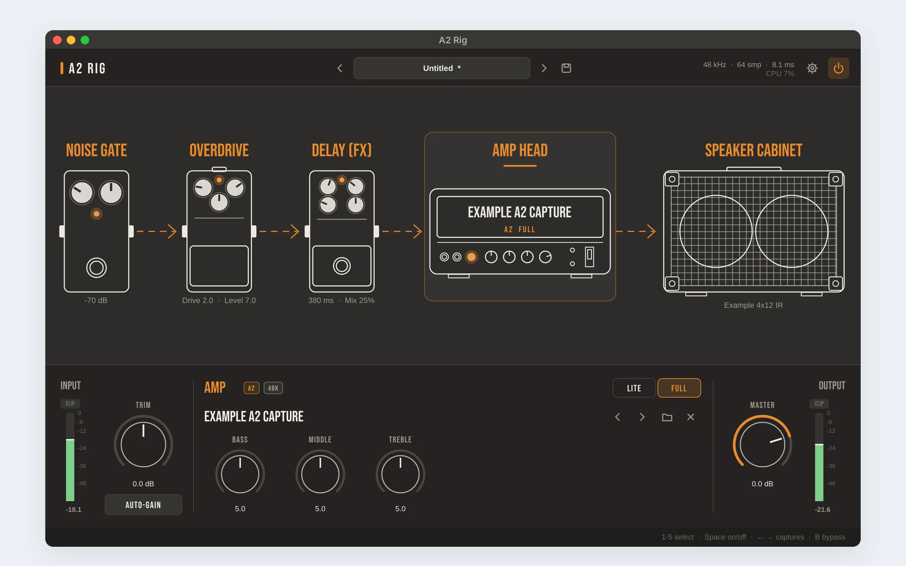
Overview
NAM is an open-source way to capture a real amp with machine learning and play it on a computer. Its newer A2 captures are lighter and can run in two qualities, Full and Lite. To play them, though, I had to open a recording program, make a track, arm the input, insert a plugin and load the capture and a cabinet file. Every single time.
So I designed my own player. One window, opened straight into playing, built around how I already think about a guitar rig: a chain of pedals into an amp and a cabinet. The design is mine from start to finish: the brief, the interaction model, the visual direction and every decision between the two builds.
A real, working app for my own use. The screenshots below are from the running app.
DAWs to open
Launch, and the last sound and audio settings are already there.
the whole app
Down from 9.8 MB in the first build; most of it is the NAM engine.
CPU for A2-Lite
About 8% for A2-Full, on one core at a 64-sample buffer.
The problem
Practice time is short. Every step between picking up the guitar and hearing a good sound is a reason not to play.
Too many steps
A DAW, a track, an armed input, a plugin, a capture and a cab IR, before the first note.
Levels are guesswork
Captures expect a certain input level. Hot active pickups can push the input too hard without you noticing.
Latency is invisible
You feel a late note before you can find the setting that causes it.
Panels, not a rig
Plugin windows show rows of knobs. I think in pedals, an amp and a cab, in that order.
I want to pick up the guitar and play an A2 capture within seconds, at the right level, with the lowest latency my interface allows, and without opening a DAW.
How might we…
- make the app open straight into playing, with everything as I left it?
- show the whole signal path at a glance, and edit any part of it in one click?
- set the input level correctly without knowing anything about gain staging?
- make latency and clipping visible before they become a problem?
- keep the app so light that it never competes with the sound for CPU?
Designing for one user: me
Designing for yourself is easy to do badly: you skip the brief because you think you know it. So I wrote down my setup and my needs first, and judged every build against them.
My setup
- Mac mini M1, SSL 2 MK2 audio interface.
- A six-string with active pickups: a hot, loud signal.
- Practice at home, short sessions, often late.
- A folder of A2 captures and cabinet IRs to switch between.
What I need from it
- Open and play, with no setup on the second launch.
- Switch captures with my hands still on the guitar.
- Know my levels are right and my latency is low.
- Nothing running that I am not using.
Process: two builds, one review
1 · Can it be done?
Research: NAM’s engine is open source, and one A2 file holds both a Full and a Lite version of the capture.
2 · First build
A working player with a classic panel: input, gate, EQ, output, cab IR and presets.
3 · My review
Three changes: extremely lightweight, the chain drawn like my two reference images, and levels you can see: meters, auto-gain and latency.
4 · Second build
The chain becomes the interface, with meters, auto-gain and visible latency.
| First build | Second build | Why |
|---|---|---|
| A panel of knobs: input, gate, EQ, output | The signal chain drawn as pedals, amp head and cabinet; click a block to edit it | I think in pedals and amps, not parameter lists |
| Gate and EQ only | Overdrive and delay added as real effects | They were in my reference images, so they had to work |
| Full JUCE framework, 9.8 MB | Only the modules it needs, stripped binary, 8 MB; blocks that are off cost nothing | “Extremely lightweight” was a requirement, not a wish |
| No metering | Input and output meters with zones, peak hold and a CLIP light that stays on | You cannot set a level you cannot see |
| Manual input trim | AUTO-GAIN: play hard for 3 seconds and the trim is set for you | Hot pickups and captures that expect a set level |
| Latency hidden in settings | Round-trip latency always in the header, and colour-coded in Settings | Latency is felt before it is found |
| Delay in one fixed place | Before the amp or after the cab, and the pedal moves in the drawing | Clean repeats with high gain, and the picture always tells the truth |
Design principles
The chain is the interface
One picture shows what is on, in what order, and with which settings. Click it to edit it.
Off costs nothing
Lightweight is a feature: anything switched off, or left flat, is skipped by the audio engine.
Show levels, don’t guess
Meters, a clip light that waits for you, auto-gain and level-matching between captures.
Hands stay on the guitar
Every common action has a single key: blocks 1 to 5, Space, arrows, B.
Remember everything
Interface, input, last sound and window size come back on the next launch.
Say what to do next
Every message in the status bar names the problem and the fix.
One window, four layers
No tabs and no pages. Everything sits in one window, from the general at the top to the specific at the bottom.
Presets (previous, name, next, save), the audio status (sample rate, buffer, latency, CPU), settings and the power switch.
The signal chain, left to right, in the order the sound travels. The selected block is outlined.
Input meter and trim on the left, the selected block’s controls in the middle, master and output meter on the right.
The last thing that happened, and the keyboard shortcuts as a constant reminder.
The chain tells the truth
The drawing is not decoration. It changes with the sound, so it can be trusted at a glance.
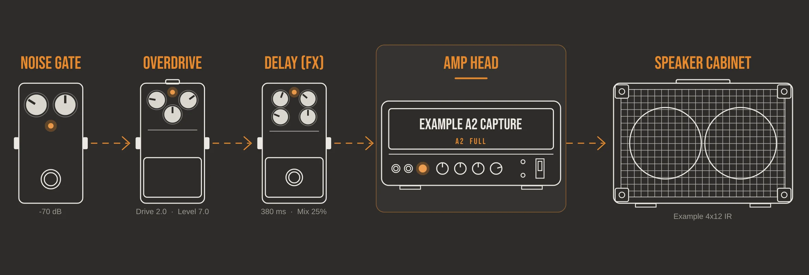
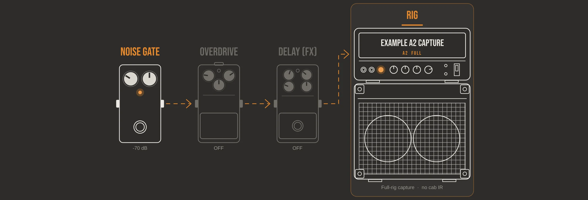
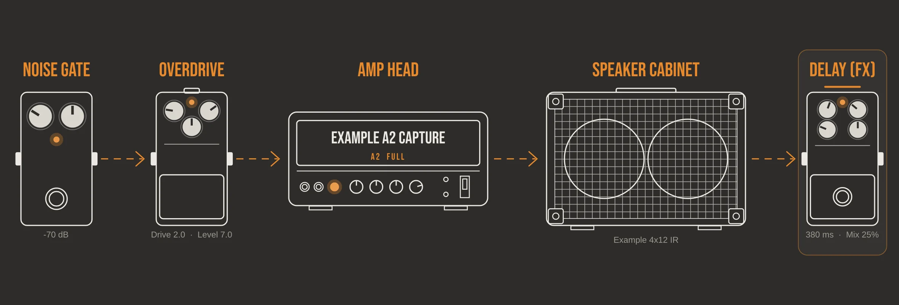
- An orange label means the block is on; dim grey lines mean it is off.
- The small knobs on each drawing turn with the real values, and a line of text under each pedal says them in words: “Drive 2.0 · Level 7.0”.
- The capture’s name is printed on the amp head, with its type and quality: “A2 · FULL”.
- Click a block to open its controls; click its footswitch to turn it on or off.
Colours, type and tokens
A dark stage for a dark room, white line art and one accent colour. Every value lives in a single file of design tokens, so the whole look can change from one place.
Surfaces and line art
Meter zones
Type
Noise gate · Overdrive · Amp head
Trim · Master · Auto-gain
Drive 2.0 · Level 7.0 · 380 ms · Mix 25%
- Bebas Neue for labels and block names: condensed capitals, like the printing on real gear. Embedded in the app (SIL Open Font License).
- The system font at 13 px for values and messages.
- Geometry: 10 and 6 px corners, a 16 px spacing unit, a 54 px header, a 236 px deck and a 28 px status bar.
- Selection is never colour alone: the selected block gets an outline and an underline as well.
| Text colour on the stage | Contrast | Used for |
|---|---|---|
| Text #EFEDE8 | 11.9 : 1 (passes AA) | Capture name, values |
| Accent #E8892B | 5.3 : 1 (passes AA) | Labels of blocks that are on |
| Muted #9D998F | 4.9 : 1 (passes AA) | Secondary labels |
| Faint #6C6963 | 2.5 : 1 (fails) | Shortcut hints, meter scale. Next build: #98948C, 4.6 : 1 |
The screens
Screenshots from the running app, with a recorded guitar signal playing through it.
01 Main view: the whole rig on one screen
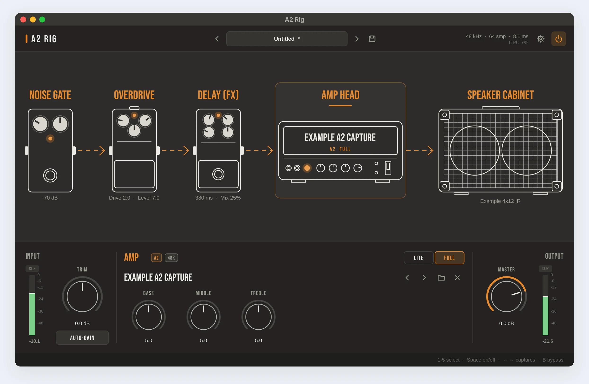
The amp is selected, so the deck shows its controls: the capture’s name, badges for its type and sample rate, the Lite/Full switch and a three-band EQ. Arrows next to the name step through the other captures in the same folder.
Key choices: the audio status is always in the header; Lite and Full are a segmented switch, not a menu, because I change them while playing.
02 Full-rig capture: head and cab become one
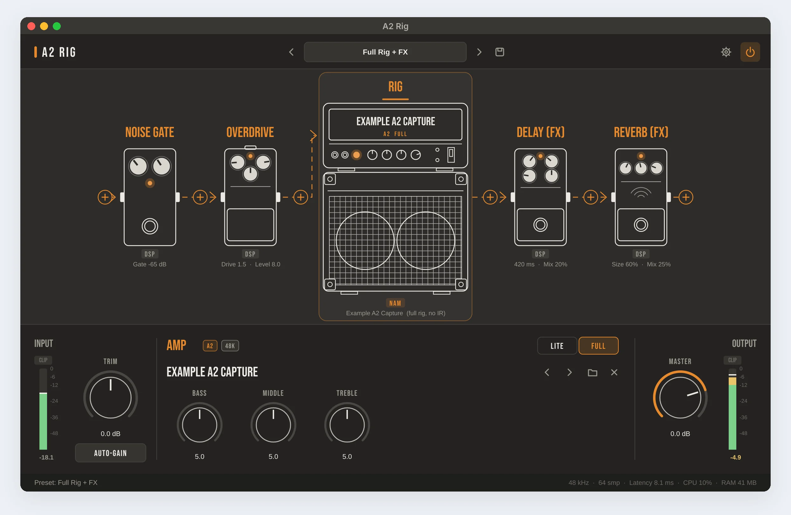
Many captures already include the cabinet. Adding a second cabinet would make the sound muddy, so without an IR the drawing stacks the head on the cab and labels it “Full-rig capture · no cab IR”.
03 Noise gate: see it working
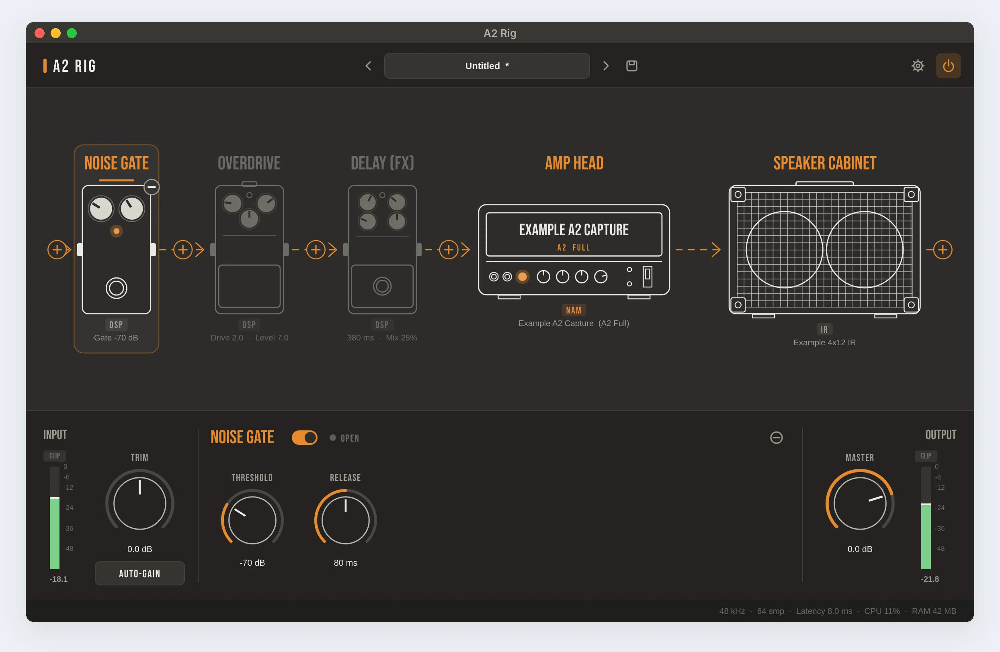
A gate that you cannot see is a gate you cannot set. An LED next to the switch reads OPEN or CLOSED, live, so the threshold can be set by watching it while the strings ring out.
04 Overdrive: a hint where it matters
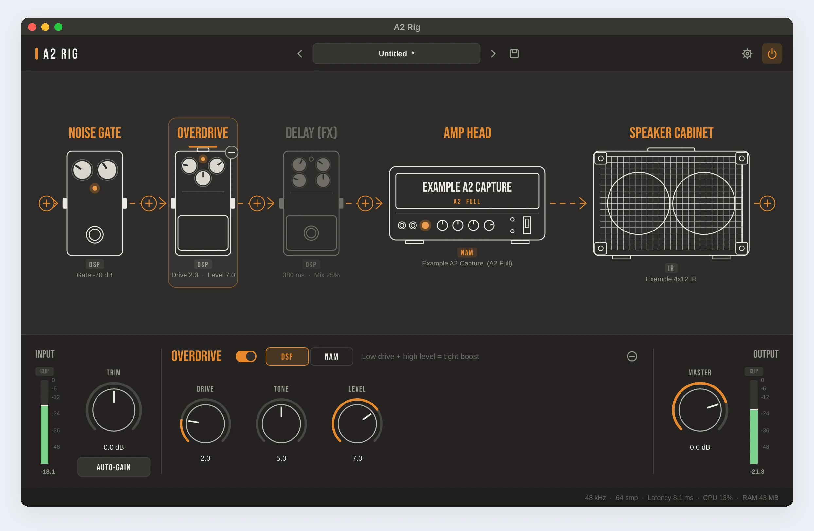
One line of advice sits next to the switch: “Low drive + high level = tight boost into a high-gain amp”. It is the most common way to use this pedal with metal captures, so the defaults start there.
05 Delay: before the amp or after the cab
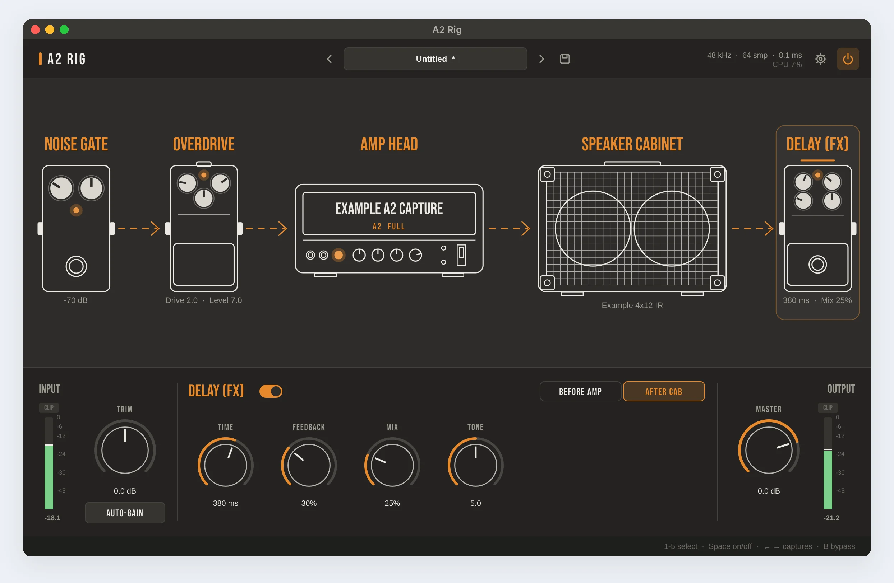
Before the amp, the repeats get distorted with everything else. After the cab, they stay clean, which suits high gain. One switch changes it, and the pedal moves in the drawing at the same moment.
06 Auto-gain: the level, set for you
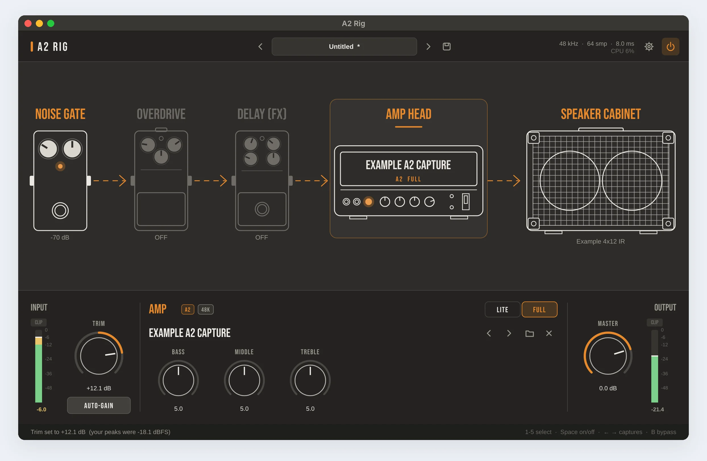
Press AUTO-GAIN and play hard for three seconds: big chords and palm mutes. The app measures the strongest pick attacks, ignores single spikes, and sets the trim so they reach about −6 dBFS, the hot but clean signal most captures expect. Then it says exactly what it did.
Key choice: the trim stays a normal knob afterwards. Auto-gain gives a starting point; it never takes control away.
07 Clipping: a light that waits for you
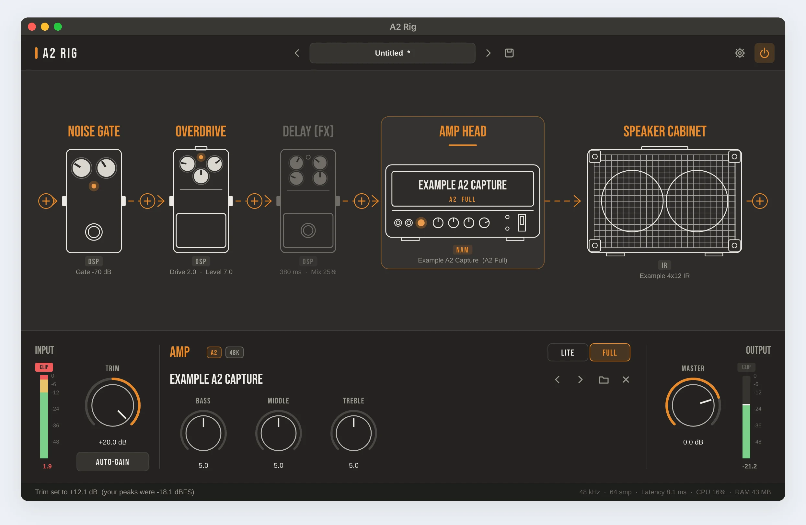
A clip lasts milliseconds, and you are looking at the fretboard when it happens. So the CLIP light stays on until you click the meter. It also lights when the interface itself clips, before the app touches the signal.
08 Settings: latency in plain sight
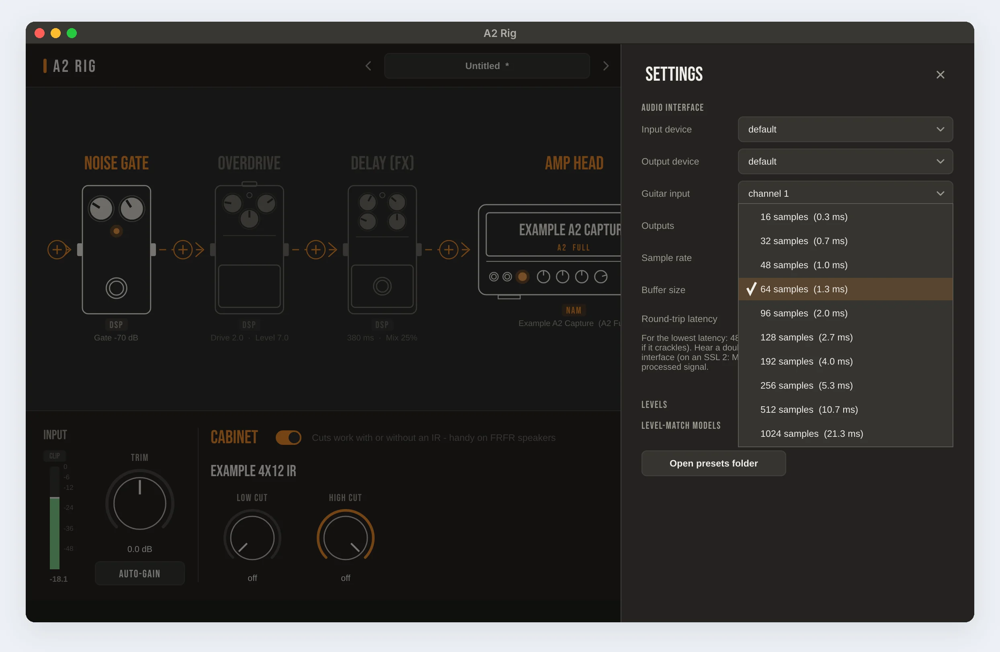
The panel slides over the rig instead of opening a new window. Buffer sizes show their milliseconds, and the round-trip latency is coloured: green up to 6 ms, amber up to 10, red above. A note explains the most common cause of a doubled, flanging sound: the interface’s direct monitoring, with the exact setting for my SSL 2.
09 Empty state: one clear next step
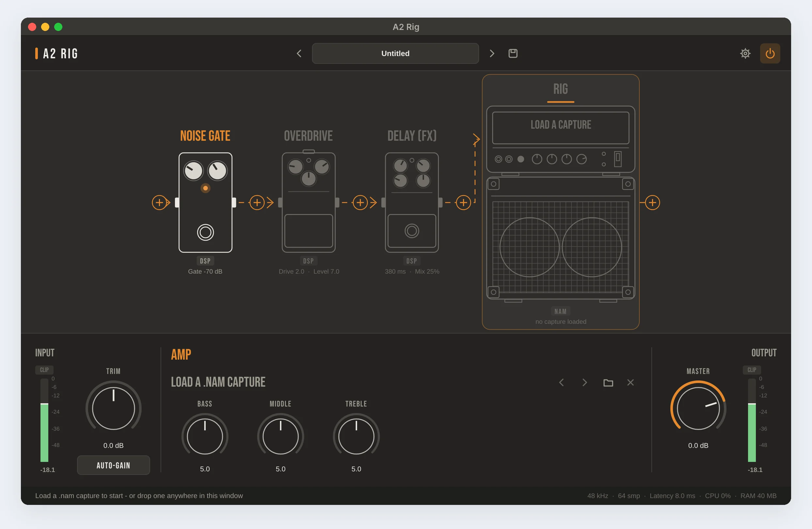
On first launch the amp head itself says “Load a capture”, and the status bar adds that a file can be dropped anywhere in the window. Captures, IRs and presets can all be dropped the same way.
10 Bypass: the dry signal, on purpose
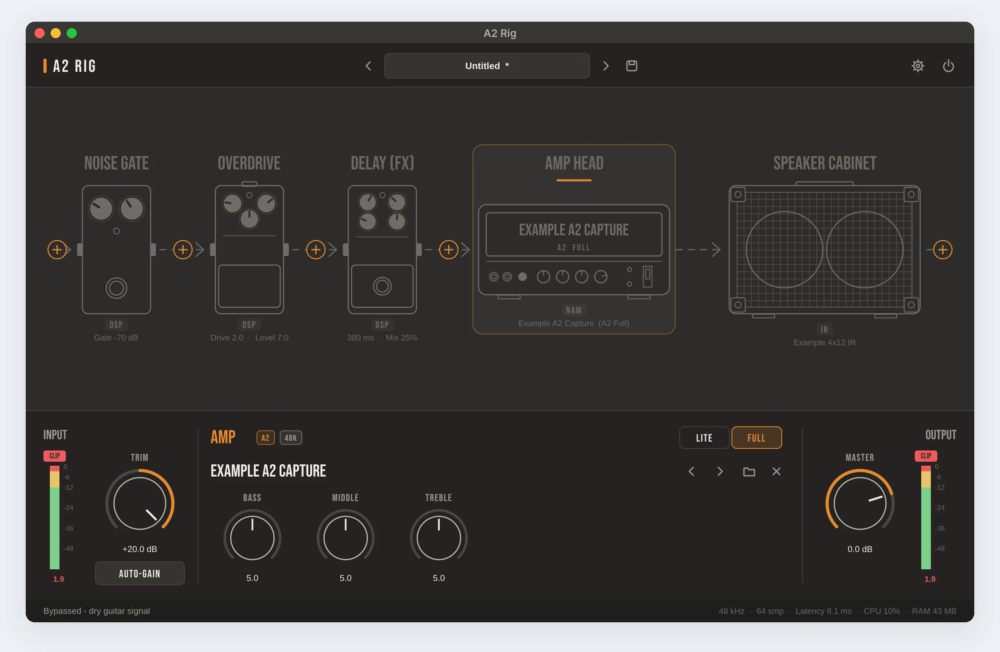
Press B, or the power switch, and the whole drawing dims at once. The status bar confirms it, so a silent or dry guitar is never a mystery.
Screenshots were made on a test machine with a virtual audio device; the latency and CPU readouts in them come from that machine, not from my Mac.
Hands on the guitar
A pick in one hand and the neck in the other leaves one finger free. Everything I do while playing is a single key.
| Key or gesture | What it does |
|---|---|
| 1 to 5 | Select gate, overdrive, delay, amp or cabinet |
| Space | Turn the selected block on or off |
| ← → | Previous or next capture in the folder (or IR, when the cabinet is selected) |
| B | Bypass the whole rig |
| ⌘ S · ⌘ , | Save a preset · open settings |
| Click a block · its footswitch | Open its controls · turn it on or off |
| Drop a file anywhere | Load a capture (.nam), an IR (.wav) or a preset (.a2rig) |
| Click a meter | Reset its CLIP light |
Messages that say what to do
| Situation | What the status bar says |
|---|---|
| First launch | “Load a .nam capture to start - or drop one anywhere in this window” |
| No permission for the input | “No input access - allow it in System Settings > Privacy & Security > Microphone” |
| Auto-gain heard nothing | “Didn’t hear the guitar - check the input in Settings and the interface gain” |
| Auto-gain with no input open | “No guitar input is open - pick one in Settings first” |
| Switching quality | “A2-Lite: lowest CPU” · “A2-Full: maximum accuracy” |
| Bypass | “Bypassed - dry guitar signal” |
Lightweight is a design decision
For a musician, a slow app is not a slow screen; it is a late note or a click in the sound. So I treated the CPU budget like any other requirement.
| What is running | CPU, one core |
|---|---|
| A2-Lite capture and gate | ~1.7% |
| A2-Full capture and gate | ~8% |
| A2-Full with gate, overdrive, delay and cab IR | ~9% |
| The window, idle | ~0.5%, 26 MB of memory |
| For comparison: an older standard A1 capture | ~28% |
- Only the parts of the JUCE framework the app uses: no plugin hosting, no web view, no extra audio formats.
- Blocks that are off are skipped. An EQ left at 5/5/5 and cuts left off are skipped too.
- Cabinet IRs are trimmed to 170 ms, where the cabinet’s character lives, and run with zero added latency.
- The chain is drawn once and cached; meters redraw only when their value changes.
Measured on one core of a test server at 48 kHz with a 64-sample buffer. An M1 Mac should be similar or better.
Designed edge cases
Interface not at 48 kHz
The capture is resampled automatically, and a RESAMPLED badge says so.
Captures at different volumes
Level-matching reads each capture’s loudness, so switching does not jump in volume.
Full-rig capture
No IR loaded: the chain shows one RIG stack, and the cuts still work for flat-response speakers.
Doubled, flanging sound
Settings explains direct monitoring and the exact fix on the SSL 2.
Hot pickups
A CLIP light that stays on, and auto-gain to bring the level back.
Missing files
A preset whose capture has moved says which file it could not find, and keeps the rest.
What I would change next
Contrast. The faint grey of the shortcut hints and the meter scale is 2.5 : 1. It should be #98948C, 4.6 : 1.
Knobs from the keyboard. To keep keys free for shortcuts, knobs cannot take keyboard focus. Arrow keys could nudge the knob under the mouse instead.
Hands-free. A MIDI footswitch for bypass and the next capture, so I never have to reach for the Mac.
Real-world check. Measure latency and CPU on my Mac mini with the SSL 2, and time how long it takes from launch to the first note.
What I learned
A drawing can be the interface. Once the chain told the truth, most labels and menus were no longer needed.
Performance is UX. For an audio app, “extremely lightweight” turned into numbers I could check, and it changed what got built.
Even a user of one needs a brief. Writing my own needs down made it easy to say no to features.
The review is where the design happened. The first build worked, but it was too generic. The second one came from taking it apart and setting new rules for it.
How this was made: the design is entirely mine: the brief, the references, the interaction and visual decisions, and every review. The sound engine is the open-source NAM core; the app around it was written with Claude from my specifications, and I tested every build.
Sources and credits